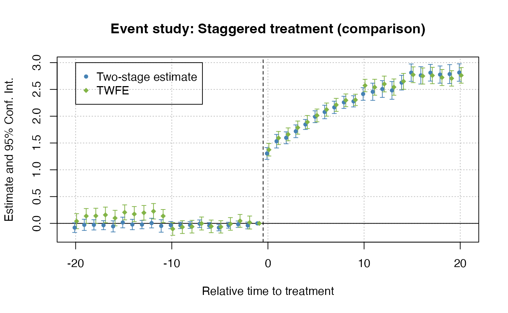

Two-Stage-Difference-in-Differences.RmdResearchers often want to a difference-in-differences (DiD) model in a regression setting. Typically, these have made use of the so-called twoway fixed effects (TWFE) framework. For example, in a static setting:
\[\begin{equation} y_{it} = \mu_i + \mu_t + \tau D_{it} + \varepsilon_{it}, \end{equation}\]
where \(\mu_i\) are unit fixed effects, \(\mu_t\) are time fixed effects, and \(D_{it}\) is an indicator for receiving treatment.
Similarly, a (dynamic) event-study TWFE model could be written as:
\[\begin{equation} y_{it} = \mu_i + \mu_t + \sum_{k = -L}^{-2} \tau^k D_{it}^k + \sum_{k = 1}^{K} \tau^k D_{it}^k + \varepsilon_{it}, \end{equation}\]
where \(D_{it}^k\) are lag/leads of treatment (k periods from initial treatment date).
However, running OLS to estimate either model has been shown to not recover an average treatment effect and has the potential to be severely misleading in cases of treatment effect heterogeneity Borusyak et. al. (2021); Callaway and Sant’Anna (2020); de Chaisemartin and d’Haultfoeuille (2020); Goodman-Bacon (2021); Sun and Abraham (2020)].
One way of thinking about this problem is through the Frisch–Waugh–Lovell (FWL) theorem. When estimating the unit and time fixed effects, you create a residualized \(\tilde{Y}_{it}\) which is commonly said to be “the outcome variable after removing time shocks and fixed units characteristics”, but you also create a residulaized \(\tilde{D}_{it}\) or \(\tilde{D}_{it}^k\). To simplify the literature, this residualized treatment indicators is what creates the problem of interpreting \(\tau\) or \(\tau^k\), especially when treatment effects are heterogeneous.
That’s where Gardner (2021) comes in. What Gardner does to fix the problem is quite simple: estimate \(\mu_i\) and \(\mu_t\) seperately so you don’t residualize the treatment indicators. In the absence of treatment, the TWFE model gives you a model for (potentially unobserved) untreated outcomes
\[y_{it}(0) = \mu_i + \mu_t + \varepsilon_{it}.\]
Therefore, if you can consistently estimate \(y_{it}(0)\), you can impute the untreated outcome and remove that from the observed outcome \(y_{it}\). The value of \(y_{it} - \hat{y}_{it}(0)\) should be close to zero for control units and should be close to \(\tau_{it}\) for treated observations. Then, regressing \(y_{it} - \hat{y}_{it}(0)\) on the treatment variables should give unbiased estimates of treatment effects (either static or dynamic/event-study).
The steps of the two-step estimator are:
First estimate \(\mu_i\) and \(\mu_t\) using untreated/not-yet-treated observations, i.e. the subsample with \(D_{it}=0\). Residualize outcomes \(\tilde{y}_{it} = y_{it} - \hat{\mu}_i - \hat{\mu}_t\).
Regress \(\tilde{y}_{it}\) on \(D_{it}\) or \(D_{it}^k\)’s to estimate the treatment effect \(\tau\) or \(\tau^k\)’s.
Some notes:
First, the standard errors on \(\tau\) or \(\tau^k\)’s will be incorrect as the dependent variable is itself an estimate. This is referred to the generated regressor problem in econometrics parlance. Therefore, Gardner (2021) has developed a GMM estimator that will give asymptotically correct standard errors.
Second, this procedure works so long as \(\mu_i\) and \(\mu_t\) are consistently estimated. The key is to use only untreated/not-yet-treated observations to estimate the fixed effects. For example, if you used observations with \(D_{it} = 1\), you would attribute treatment effects \(\tau\) as “fixed characteristics” and would combine \(\mu_i\) with the treatment effects.
The fixed effects could be biased/inconsistent if there are anticipation effects, i.e. units respond before treatment starts. The fix is fairly simple, simply “shift” treatment date earlier by as many years as you suspect anticipation to occur (e.g. 2 years before treatment starts) and estimate on the subsample where the shifted treatment equals zero.
did2s is an R package that implements the two-stage DiD procedure described above. To install the package, run the following:
remotes::install_github("kylebutts/did2s")Note: Windows users should install Rtools before running the above command, since they will need to compile some C++ code from source.
The main function is did2s(), which
estimates the two-stage DiD procedure. The function is really a
convenience wrapper (plus some important transformations) around fixest::feols()
and will return a fixest object. This is important for
several reasons that will become clear in the examples that follow.
did2s() requires the following
arguments:
yname: The outcome variable. For example,
"y".first_stage: Formula indicating the first stage. This
can include fixed effects and covariates, but do not include treatment
variable(s)! For efficiency, it is recommended to use the
fixest convention of specifying fixed effects after a
vertical bar. For example, ~ x1 + x2 | fe1 + fe2.second_stage: Formula indicating the treatment variable
or, in the case of event studies, treatment variables. Again, following
fixest conventions, it is recommended to use the i()
syntax. For example, ~ i(time_to_treatment, ref = 0).treatment: A binary (1/0) or logical (TRUE/FALSE)
variable demarcating when treatment turns on for a unit. For example,
"treated".Optional arguments include the ability to implement weighted regressions and whether to cluster or bootstrap standard errors.
Let’s walk through an example dataset from the package.
library(did2s) ## The main package. Will automatically load fixest as well.
#> Loading required package: fixest
#> ℹ did2s (v0.6.0). For more information on the methodology, visit <https://www.kylebutts.com/did2s>
#> To cite did2s in publications use:
#>
#> Butts, Kyle (2021). did2s: Two-Stage Difference-in-Differences
#> Following Gardner (2021). R package version 0.6.0.
#>
#> A BibTeX entry for LaTeX users is
#>
#> @Manual{,
#> title = {did2s: Two-Stage Difference-in-Differences Following Gardner (2021)},
#> author = {Kyle Butts},
#> year = {2021},
#> url = {https://github.com/kylebutts/did2s/},
#> }
library(ggplot2)
## Load heterogeneous treatment dataset from the package
data("df_het")
head(df_het)
#> unit state group unit_fe g year year_fe treat rel_year
#> <int> <int> <char> <num> <num> <int> <num> <lgcl> <num>
#> 1: 1 6 Group 2 0.06006747 2010 1990 0.07979312 FALSE -20
#> 2: 1 6 Group 2 0.06006747 2010 1991 0.08033176 FALSE -19
#> 3: 1 6 Group 2 0.06006747 2010 1992 0.53502293 FALSE -18
#> 4: 1 6 Group 2 0.06006747 2010 1993 -0.25604459 FALSE -17
#> 5: 1 6 Group 2 0.06006747 2010 1994 0.65144106 FALSE -16
#> 6: 1 6 Group 2 0.06006747 2010 1995 -0.91907029 FALSE -15
#> rel_year_binned error te te_dynamic dep_var
#> <num> <num> <num> <num> <num>
#> 1: -6 0.16102846 0 0 0.3008891
#> 2: -6 -0.02683617 0 0 0.1135631
#> 3: -6 -2.43225707 0 0 -1.8371667
#> 4: -6 -0.82792190 0 0 -1.0238990
#> 5: -6 -1.84044065 0 0 -1.1289321
#> 6: -6 0.50221380 0 0 -0.3567890Here is a plot of the average outcome variable for each of the groups:
# Mean for treatment group-year
agg <- aggregate(df_het$dep_var, by=list(g = df_het$g, year = df_het$year), FUN = mean)
agg$g <- as.character(agg$g)
agg$g <- ifelse(agg$g == "0", "Never Treated", agg$g)
never <- agg[agg$g == "Never Treated", ]
g1 <- agg[agg$g == "2000", ]
g2 <- agg[agg$g == "2010", ]
plot(0, 0, xlim = c(1990,2020), ylim = c(4,7.2), type = "n",
main = "Data-generating Process", ylab = "Outcome", xlab = "Year")
abline(v = c(1999.5, 2009.5), lty = 2)
lines(never$year, never$x, col = "#8e549f", type = "b", pch = 15)
lines(g1$year, g1$x, col = "#497eb3", type = "b", pch = 17)
lines(g2$year, g2$x, col = "#d2382c", type = "b", pch = 16)
legend(x=1990, y=7.1, col = c("#8e549f", "#497eb3", "#d2382c"),
pch = c(15, 17, 16),
legend = c("Never Treated", "2000", "2010"))Example data with heterogeneous treatment effects
First, lets estimate a static did. There are two things to note here.
First, note that I can use fixest::feols formula including
the | for specifying fixed effects and
fixest::i for improved factor variable support. Second,
note that did2s returns a fixest estimate
object, so fixest::esttable, fixest::coefplot,
and fixest::iplot all work as expected.
# Static
static <- did2s(df_het,
yname = "dep_var", first_stage = ~ 0 | state + year,
second_stage = ~i(treat, ref=FALSE), treatment = "treat",
cluster_var = "state")
#> Running Two-stage Difference-in-Differences
#> • first stage formula `~ 0 | state + year`
#> • second stage formula `~ i(treat, ref = FALSE)`
#> • The indicator variable that denotes when treatment is on is `treat`
#> • Standard errors will be clustered by `state`
fixest::esttable(static)
#> static
#> Dependent Var.: dep_var
#>
#> treat = TRUE 2.260*** (0.0524)
#> _______________ _________________
#> S.E. type Custom
#> Observations 31,000
#> R2 0.37283
#> Adj. R2 0.37283
#> ---
#> Signif. codes: 0 '***' 0.001 '**' 0.01 '*' 0.05 '.' 0.1 ' ' 1This is very close to the true treatment effect of ~2.23.
Then, let’s estimate an event study did. Note that relative year has
a value of Inf for never treated, so I put this as a
reference in the second stage formula.
# Event Study
es <- did2s(df_het,
yname = "dep_var", first_stage = ~ 0 | state + year,
second_stage = ~i(rel_year, ref=c(-1, Inf)), treatment = "treat",
cluster_var = "state")
#> Running Two-stage Difference-in-Differences
#> • first stage formula `~ 0 | state + year`
#> • second stage formula `~ i(rel_year, ref = c(-1, Inf))`
#> • The indicator variable that denotes when treatment is on is `treat`
#> • Standard errors will be clustered by `state`And plot the results:
fixest::iplot(es, main = "Event study: Staggered treatment", xlab = "Relative time to treatment", col = "steelblue", ref.line = -0.5)
# Add the (mean) true effects
true_effects = head(tapply((df_het$te + df_het$te_dynamic), df_het$rel_year, mean), -1)
points(-20:20, true_effects, pch = 20, col = "black")
# Legend
legend(x=-20, y=3, col = c("steelblue", "black"), pch = c(20, 20),
legend = c("Two-stage estimate", "True effect"))Event-study plot with example data
twfe = feols(dep_var ~ i(rel_year, ref=c(-1, Inf)) | unit + year, data = df_het)
fixest::iplot(list(es, twfe), sep = 0.2, ref.line = -0.5,
col = c("steelblue", "#82b446"), pt.pch = c(20, 18),
xlab = "Relative time to treatment",
main = "Event study: Staggered treatment (comparison)")
# Legend
legend(x=-20, y=3, col = c("steelblue", "#82b446"), pch = c(20, 18),
legend = c("Two-stage estimate", "TWFE"))
If you use this package to produce scientific or commercial publications, please cite according to:
citation(package = "did2s")
#>
#> To cite did2s in publications use:
#>
#> Butts, Kyle (2021). did2s: Two-Stage Difference-in-Differences
#> Following Gardner (2021). R package version 0.6.0.
#>
#> A BibTeX entry for LaTeX users is
#>
#> @Manual{,
#> title = {did2s: Two-Stage Difference-in-Differences Following Gardner (2021)},
#> author = {Kyle Butts},
#> year = {2021},
#> url = {https://github.com/kylebutts/did2s/},
#> }Borusyak, Kirill, Xavier Jaravel, and Jann Spiess (2021). “Revisiting Event Study Designs: Robust and Efficient Estimation”, Working Paper.
Callaway, Brantly, and Pedro H. C. Sant’Anna (2020). “Difference-in-differences with multiple time periods.”, Journal of Econometrics.
de Chaisemartin, Clement, and Xavier d’Haultfoeuille (2020). “Two-way fixed effects estimators with heterogeneous treatment effects.”, American Economic Review.
Gardner, John (2021). “Two-Stage Difference-in-Differences.”, Working Paper.
Goodman-Bacon, Andrew (2021). “Difference-in-differences with variation in treatment timing.”, Journal of Econometrics.
Sun, Liyang, and Sarah Abraham (2020). “Estimating dynamic treatment effects in event studies with heterogeneous treatment effects.”, Journal of Econometrics.